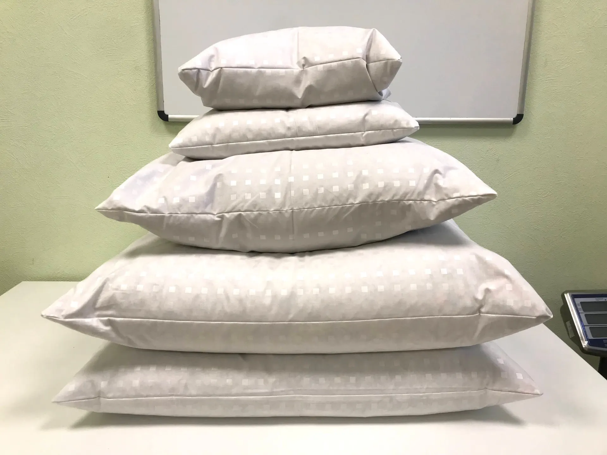
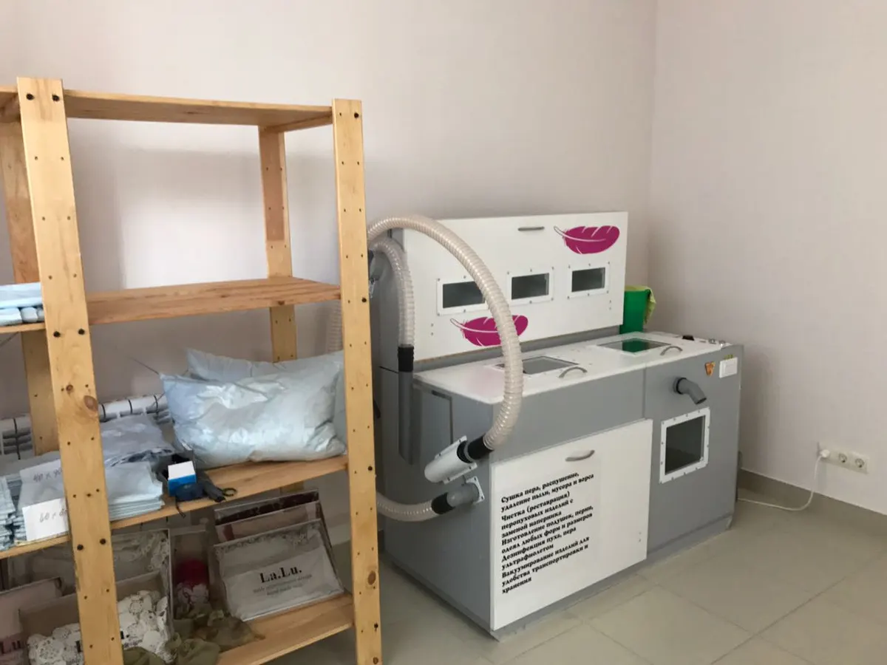
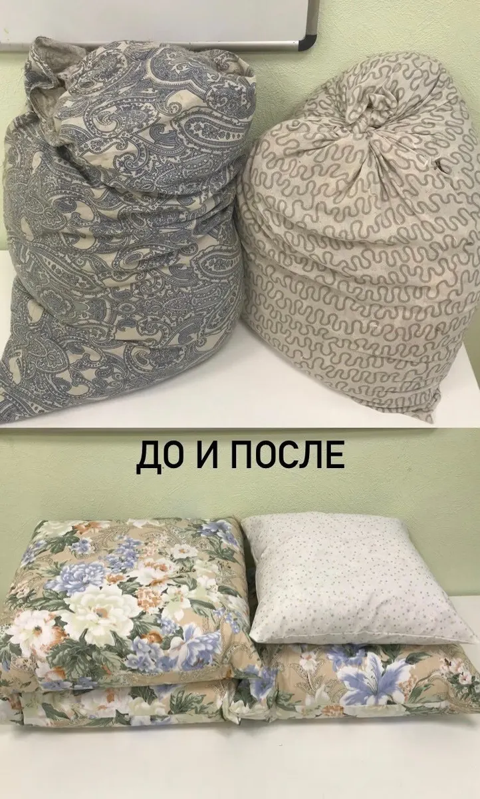
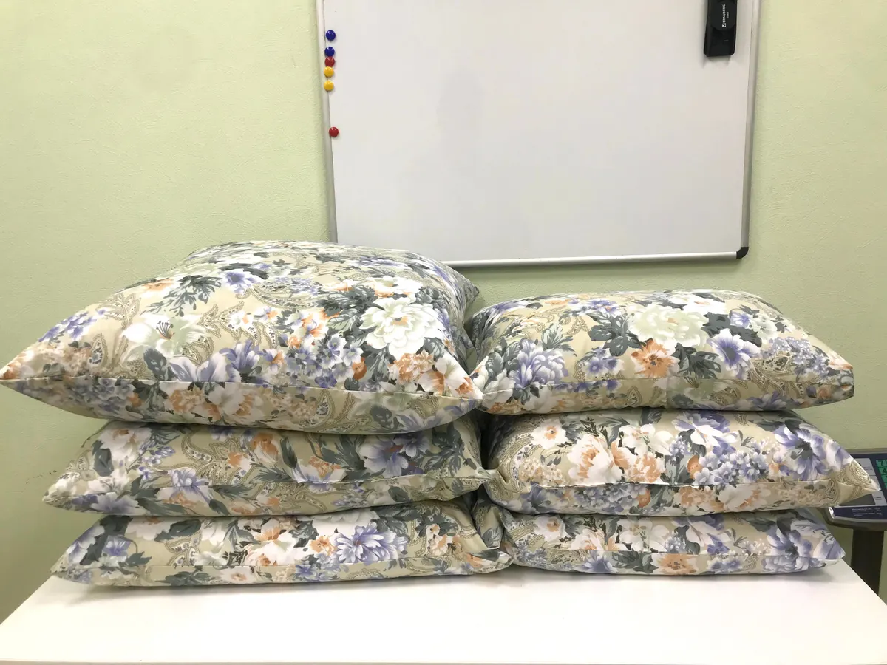

Чистка подушек и клининг · Ростов-на-Дону · с 10 до 18
Чистка подушек в Ростове-на-Дону: при вас и быстро
Чистим перьевые и пуховые подушки с заменой наперника. Клиенты пишут, что всё делают при них, от 15 до 30 минут.

- Чистка при вас, без недели ожидания
- Для дома и для бизнеса: клининг, химчистка, ателье
- С 10:00 до 18:00
Услуги и цены
Цен на карточке Яндекс.Карт нет, поэтому везде «уточнить». Клиент в отзыве от 8 сентября 2025 называет 600 ₽ за подушку, актуальную цену подскажут по телефону.
Что делаем
- Чистка перьевых и пуховых подушекуточнить
- Чистка ковровуточнить
- Клинингуточнить
- Химчисткауточнить
- Ательеуточнить
Цену называют по телефону: зависит от числа подушек и выбранного размера.
Как проходит чистка подушек
- 01
Звонок
Звоните или пишете: сколько подушек и какой размер нужен.
- 02
Приезжаете
Чистку делают в вашем присутствии, мастер объясняет, что и как.
- 03
Размер и мягкость
Вместе выбираете размер подушки, наперник и степень мягкости.
- 04
Забираете
По отзывам клиентов, подушки готовы за 15-30 минут.



Что важно знать
При вас
Как пишут клиенты в отзывах, всё происходит на ваших глазах.
Новый наперник
Перо чистят и оформляют в новую оболочку, размер можно выбрать.
Для дома и бизнеса
Кроме подушек: клининг, химчистка, ателье.
С 10 до 18
Работаем с 10:00 до 18:00, лучше позвонить заранее.
Отзывы с Яндекс.Карт
«Очень быстро за 15 минут почистили 4 пуховые подушки с заменой наперника!! Все рассказали, показали и объяснили 😍»
Ксения Семенцова · 8 сентября 2025
«Оставила заявку, позвонили сразу и пригласили приехать и в нашем присутствии провели чистку. Процесс занял не более 30 мин»
Лада Булахова · 9 июня
«Все делается при вас, объяснили принцип работы аппаратуры и в дальнейшем было очень интересно наблюдать за процессом чистки.»
Иван Д. · 25 ноября 2025
Отзывы с карточки на Яндекс.Картах, без правок.
Контакты
- Адрес
- улица Вересаева, 107, Ростов-на-Дону
- Часы
- с 10:00 до 18:00
- Телефон
- +7 (906) 184-84-25